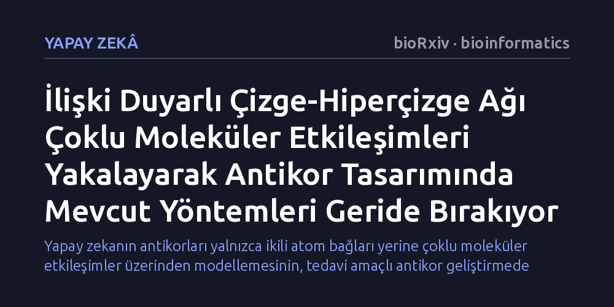

YAPAY-ZEKA · bioRxiv · bioinformatics · 2026-10-19
Araştırmacılar, antikor-antijen arayüzündeki karmaşık çoklu etkileşimleri yakalamak amacıyla çizge ve hiperçizge modellerini birleştiren yeni bir yapay zeka mimarisi geliştirdi. Geliştirilen model, standart testlerde ve bağlanma gücünü artırma görevlerinde mevcut yöntemlerden daha yüksek başarı sergiledi.
Yapay zekanın antikorları yalnızca ikili atom bağları yerine çoklu moleküler etkileşimler üzerinden modellemesinin, tedavi amaçlı antikor geliştirmede daha güvenilir sonuçlar verebileceğini gösteriyor.

Antikorlar, bağışıklık sistemimizin virüs ve bakteri gibi yabancı hedefleri tanıyıp etkisiz hale getiren en kritik savunma araçlarıdır. Günümüzde kanserden otoimmün hastalıklara kadar pek çok tedavide hedefe yönelik ilaç olarak antikorlar kullanılıyor. Bir antikorun tedavi edici gücü, özellikle antijenle doğrudan temas kuran ve tamamlayıcılık belirleyici bölge (CDR) olarak adlandırılan ilmeklerin şekline ve amino asit dizilimine bağlıdır. Ancak bu bölgelerin laboratuvarda sıfırdan tasarlanması, biyolojik arayüzlerin devasa karmaşıklığı nedeniyle son derece zorlu bir süreçtir.
Bugüne kadar geliştirilen yapay zeka modelleri, amino asitler arasındaki ilişkileri genellikle basit ikili bağlar şeklinde ele alıyordu. Bir protein yapısı çizge olarak modellendiğinde, yalnızca iki komşu düğüm arasındaki mesafeler ve açılar hesaplanıyordu. Oysa antikorun antijene bağlandığı yüzeyde birden fazla amino asit aynı anda iş birliği yaparak ortak bir çekim veya itim alanı oluşturur. İkili ilişkilerle sınırlı kalan klasik modeller, bu kolektif kuvvetleri ve molekülün genel üç boyutlu kısıtlarını yeterince yansıtamadığı için tasarlanan yapılar pratikte hedefine zayıf bağlanabiliyor.
Bu sorunu çözmek isteyen araştırmacılar, İlişki Duyarlı Çizge-Hiperçizge Ağı (RA-GHN) adını verdikleri yeni bir hesaplamalı çerçeve geliştirdi. Model, standart çizgelerdeki ikili bağlantıların ötesine geçerek hiperçizgelerden yararlanıyor. Hiperçizgeler, tek bir kenarın ikiden fazla düğümü birbirine bağlamasına olanak tanıyarak çoklu atom kümelerini ve amino asit gruplarını tek bir etkileşim birimi olarak temsil edebiliyor.
Araştırma ekibi, antikor ve antijenin birbirine temas ettiği bölgeleri heterojen bir hiperçizge yapısıyla modelledi. Bu yapı içinde bağlanma yüzeyi yamaları, uzamsal yapısal kümeler ve yüksek dereceli merkez düğümler eşzamanlı olarak tanımlandı. Mimaride ikili ilişkileri işleyen çizge ağı ile çoklu ilişkileri yakalayan hiperçizge kodlayıcı paralel iki kanal halinde birleştirildi. Ayrıca modelin üç boyutlu uzayda dönme ve öteleme hareketlerine karşı fiziksel tutarlılığını koruyan simetri kısıtları (SE(3)-eşdeğerliği) korunarak gerçekçi molekül geometrileri güvenceye alındı.
Araştırmacılar, geliştirdikleri modeli standart antikor kıyaslama veri setleri ve afinite (bağlanma gücü) optimizasyonu görevlerinde mevcut en gelişmiş yapay zeka yöntemleriyle karşılaştırdı. Yapılan sayısal deneyler, RA-GHN modelinin hem antikor dizisini hem de üç boyutlu yapısını eşzamanlı tasarlamada mevcut yaklaşımları geride bıraktığını ortaya koydu.
Çalışmanın öne çıkan bir diğer yeniliği ise Yapı-Dizi Ayrışma İndeksi oldu. Antikor tasarımında en büyük tehlikelerden biri, modelin ya bilinen yapıları birebir kopyalaması ya da tamamen hayali ancak katlanamayan diziler üretmesidir. Geliştirilen indeks sayesinde, tasarlanan antikorun fiziksel yapısının sağlamlığı korunurken amino asit dizisinde hedefe özgü yenilikçi varyasyonlar üretilmesi arasındaki denge başarıyla sağlandı.
Elde edilen sonuçlar, protein arayüzlerinin çok gövdeli doğasını hiperçizgelerle temsil etmenin hesaplamalı biyolojide önemli bir avantaj sağladığını gösteriyor. Biyolojik moleküllerin birbirini tanıması ikili bir el sıkışmasından ziyade çok sayıda parçanın aynı anda uyum sağladığı kolektif bir kilit-anahtar mekanizmasıdır. Bu çoklu uyumu hesaba katan algoritmalar, laboratuvar ortamında sentezlenmeden önce daha umut verici antikor adaylarının elenmesini kolaylaştırabilir.
Bununla birlikte, çalışmanın henüz hakem denetiminden geçmemiş bir önbaskı olduğunu ve bulguların yalnızca bilgisayar simülasyonlarına dayandığını unutmamak gerekir. Modelin tasarladığı antikorların gerçek hücre kültürlerinde ve canlı organizmalarda ne ölçüde etkili olacağı, ilerleyen aşamalarda yapılacak ıslak laboratuvar deneyleriyle doğrulanmayı bekliyor.